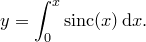

Foreach loops may be used to run a script block once for each item in a list. The list may either take the form of an explicit bracketed comma-separated list of items, or the form of one or more filename wildcards, as in the following examples:
foreach x in (-1,pi,10)
{
print x
}
foreach x in "*.dat"
{
print x
}
The first of these loops would iterate three times, with the variable x holding the values ,  and  in turn. The second of these loops would search for any datafiles in the user’s current directory with filenames ending in .dat and iterate for each of them. As previously, the wildcard character * matches any string of characters, and the character ? matches any single character. Thus, foo?.dat would match foo1.dat and fooX.dat, but not foo.dat or foo10.dat. The effect of the print statement in this particular example would be rather similar to typing:
in turn. The second of these loops would search for any datafiles in the user’s current directory with filenames ending in .dat and iterate for each of them. As previously, the wildcard character * matches any string of characters, and the character ? matches any single character. Thus, foo?.dat would match foo1.dat and fooX.dat, but not foo.dat or foo10.dat. The effect of the print statement in this particular example would be rather similar to typing:
!ls *.dat
The quotes around each supplied search string are compulsory if any of the characters in the search string are alphanumeric, but optional otherwise. Since both of the wildcard characters * and ? are non-alphanumeric, the quotes are compulsory in most useful cases. An error is returned if there are no files in the present directory which match the supplied wildcard. The following example would produce plots of all of the datafiles in the current directory with filenames foo_*.dat or bar_*.dat as eps files with matching filenames:
set terminal eps
foreach x in "foo_*.dat" "bar_*.dat"
{
outfilename = x
outfilename =~ s/dat/eps/
set output outfilename
plot x using 1:2
}